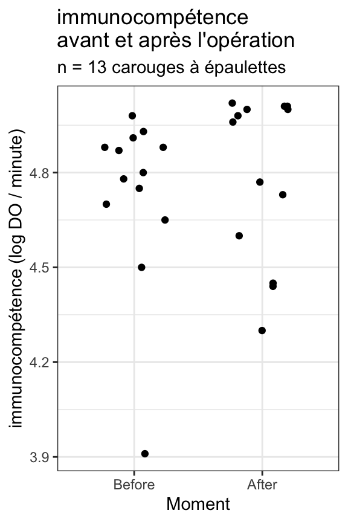

library(tidyverse)
library(skimr)10.1 Pré-requis
Pour ce nouveau chapitre, je vous conseille de travailler dans un nouveau script que vous placerez dans votre répertoire de travail, et dans une nouvelle session de travail (Menu Session > Restart R). Inutile en revanche de créer un nouveau Rproject : vous pouvez tout à fait avoir plusieurs script dans le même répertoire de travail et pour un même Rproject. Comme toujours, consultez les chapitres précédents (en particulier les sections 1.3.2 et 1.3.3) si vous ne savez plus comment faire.
Si vous êtes dans une nouvelle session de travail (ou que vous avez quitté puis relancé RStudio), vous devrez penser à recharger en mémoire les packages utiles. Dans ce chapitre, vous aurez besoin d’utiliser les mêmes packages que précédemment :
- le
tidyverse(Wickham 2023), qui comprend notamment le packagereadr(Wickham, Hester, et Bryan 2024), pour importer facilement des fichiers.csvau formattibble, le packagedplyr(Wickham et al. 2023), pour manipuler des tableaux, et le packageggplot2(Wickham et al. 2024) pour les représentations graphiques. skimr(Waring et al. 2022), qui permet de calculer des résumés de données très informatifs.
Vous aurez également besoin des jeux de données suivants que vous pouvez dès maintenant télécharger dans votre répertoire de travail :
Enfin, je spécifie ici une fois pour toutes le thème que j’utiliserai pour tous les graphiques de ce chapitre. Libre à vous de choisir un thème différent ou de vous contenter du thème proposé par défaut :
theme_set(theme_bw())10.2 Contexte
On s’intéresse ici à la comparaison de 2 séries de données dont les observations sont liées 2 à 2. C’est par exemple le cas lorsque l’on fait subir un traitement à différents sujets et que l’on souhaite comparer les mesures obtenues avant et après le traitement.
Autrement dit, dans les plans d’expériences appariés, les deux traitements ou modalités sont appliqués à chaque unité d’échantillonnage : chaque sujet ou unité d’échantillonnage fournit plusieurs valeurs. Ça n’était pas le cas du chapitre précédent (@#sec-moy1) où chaque adulte n’avait fourni qu’une unique valeur de température.
Voici quelques exemples de situations qui devraient être traitées avec des tests sur données appariées :
- Comparaison de la masse de patients avant et après une hospitalisation.
- Comparaison de la diversité de peuplements de poissons dans des lacs avant et après contamination par des métaux lourds.
- Test des effets d’une crème solaire appliquée sur un bras de chaque volontaire alors que l’autre bras ne reçoit qu’un placébo.
- Test des effets du tabagisme dans un échantillon de fumeurs, dont chaque membre est comparé à un non fumeur choisi pour qu’il lui ressemble le plus possible en terme d’âge, de masse, d’origine ethnique et sociale, etc.
- Test des effets que les conditions socio-économiques ont sur les préférences alimentaires en comparant des vrais jumeaux élevés dans des familles adoptives séparées qui diffèrent en termes de conditions socio-économiques.
Les 2 derniers exemples montrent que même des individus séparés peuvent constituer une “paire statistique” s’ils partagent un certain nombre de caractéristiques (physiques, environnementales, génétiques, comportementales, etc.) pertinentes pour l’étude.
Ici, nous allons nous intéresser au lien qui pourrait exister entre la production de testostérone et l’immunité chez une espèce d’oiseau vivant en Amérique du Nord, le carouge à épaulettes.
Chez de nombreuses espèces, les mâles ont plus de chances d’attirer des femelles s’ils produisent des niveaux de testostérone élevés. Est-ce que la forte production de testostérone de certains mâles a un coût, notamment en terme d’immunocompétence ? Autrement dit, est-ce que produire beaucoup de testostérone au moment de la reproduction (ce qui fournit un avantage sélectif) se traduit par une immunité plus faible par la suite, et donc une plus forte susceptibilité de contracter des maladies (ce qui constitue donc un désavantage sélectif) ? Ce type de question est central pour comprendre comment l’allocation des ressources affecte à la fois la survie et la fécondité des individus.
Pour étudier cette question, une équipe de chercheurs (Hasselquist et al. 1999) a mis en place le dispositif expérimental suivant. Les niveaux de testostérone de 13 carouges à épaulettes mâles ont été artificiellement augmentés par l’implantation chirurgicale d’un microtube perméable contenant de la testostérone. L’immunocompétence a été mesurée pour chaque oiseau avant et après l’opération chirurgicale. La variable mesurée est la production d’anticorps suite à l’exposition des oiseaux avec un antigène non pathogène mais censé déclencher une réponse immunitaire. Les taux de production d’anticorps sont exprimés en logarithmes de densité optique par minute \(\left(\ln\frac{mOD}{min}\right)\). Si la production de testostérone influence l’immunocompétence, on s’attend à observer des différence de production d’anticorps avant et après l’intervention chirurgicale.
10.3 Importation et mise en forme des données
Les données se trouvent dans le fichier Testosterone.csv. Importez ces données dans un objet nommé Testo et affichez son contenu.
Testo# A tibble: 13 × 5
blackbird beforeImplant afterImplant logBeforeImplant logAfterImplant
<dbl> <dbl> <dbl> <dbl> <dbl>
1 1 105 85 4.65 4.44
2 2 50 74 3.91 4.3
3 3 136 145 4.91 4.98
4 4 90 86 4.5 4.45
5 5 122 148 4.8 5
6 6 132 148 4.88 5
7 7 131 150 4.88 5.01
8 8 119 142 4.78 4.96
9 9 145 151 4.98 5.02
10 10 130 113 4.87 4.73
11 11 116 118 4.75 4.77
12 12 110 99 4.7 4.6
13 13 138 150 4.93 5.01Visiblement, il n’y a pas de données manquantes mais certaines variables sont inutiles. En effet, nous aurons besoin des variables transformées en logarithmes, mais pas des 2 colonnes beforeImplant et afterImplant. Nous allons donc les retirer avec la fonction select(). Par ailleurs, la variable blackbird est importante puisque chaque individu a fourni 2 valeurs de production d’anticorps : 1 avant et 1 après l’opération chirurgicale. Il sera donc important de conserver cet identifiant individuel. Toutefois, il apparaît ici sous la forme d’une variable numérique alors qu’il s’agit d’un identifiant, d’un code. Il faut donc le transformer en facteur car cela n’aurait pas de sens calculer une moyenne des identifiants par exemple. Pour cela, nous utiliserons la fonction factor() à l’intérieur de mutate(). Enfin, nous renommerons les colonnes avec rename() pour avoir des noms plus courts et plus faciles à utiliser. Si vous ne vous rappelez plus comment utiliser ces fonctions, consultez ces sections du Chapitre 5 :
- Pour
select()etrename(), la Section 5.5 - Pour
mutate()etfactor(), la Section 5.6
Enfin, nous donnerons le nom Testo_large au tableau modifié :
Testo_large <- Testo %>%
select(-beforeImplant, -afterImplant) %>% # Suppression des colonnes inutiles
mutate(blackbird = factor(blackbird)) %>% # Transformation en facteur
rename(ID = blackbird, # Changement des noms de variables
Before = logBeforeImplant,
After = logAfterImplant)
Testo_large# A tibble: 13 × 3
ID Before After
<fct> <dbl> <dbl>
1 1 4.65 4.44
2 2 3.91 4.3
3 3 4.91 4.98
4 4 4.5 4.45
5 5 4.8 5
6 6 4.88 5
7 7 4.88 5.01
8 8 4.78 4.96
9 9 4.98 5.02
10 10 4.87 4.73
11 11 4.75 4.77
12 12 4.7 4.6
13 13 4.93 5.01Le tableau Testo_large dont nous disposons maintenant n’est pas dans un format qui nous permettra de réaliser toutes les opérations dont nous aurons besoin. En réalité, il ne s’agit pas d’un “tableau rangé” au sens du tidyverse. Un tableau rangé est un tableau dans lequel chaque ligne correspond à une unique observation et chaque colonne correspond à une unique variable. Ici, nous devrions avoir les 3 variables suivantes :
- L’identifiant des individus. La colonne
IDcorrespond à cette variable. - Le moment auquel chaque mesure a été effectuée, avant ou après l’opération chirurgicale. Cette information est pour l’instant stockée dans l’en-tête des colonnes 2 et 3 du tableau
Testo_large - La mesure de réponse immunitaire (en logarithme de la densité optique par minute). Cette information est pour l’instant stockée sous forme de valeurs numériques dans les colonnes 2 et 3 du tableau
Testo_large
Pour obtenir un tableau rangé, il nous faut donc réorganiser les colonnes 2 et 3 du tableau Testo_large :
- l’entête de ces 2 colonnes devrait constituer une nouvelle variable que nous nommerons
Moment - le contenu de ces 2 colonnes (les valeurs numériques) devrait constituer une nouvelle variable que nous nommerons
DO(pour densité optique).
Pour effectuer cette transformation, nous utiliserons la fonction pivot_longer() du package tidyr (il est déjà chargé en mémoire si vous avez chargé le tidyverse). Comme son nom l’indique, cette fonction produira un tableau plus “long” (qui aura plus de lignes) que le tableau de départ. Nous l’appellerons donc Testo_long :
Testo_long <- Testo_large %>%
pivot_longer(cols = c(Before, After), # Les colonnes qu'on veut réorganiser
names_to = "Moment", # Quel nom donner à la variable qui contiendra les noms des anciennes colonnes
values_to = "DO") %>% # Quel nom donner à la variable qui contiendra le contenu des anciennes colonnes
mutate(Moment = factor(Moment, levels = c("Before", "After")))
Testo_long# A tibble: 26 × 3
ID Moment DO
<fct> <fct> <dbl>
1 1 Before 4.65
2 1 After 4.44
3 2 Before 3.91
4 2 After 4.3
5 3 Before 4.91
6 3 After 4.98
7 4 Before 4.5
8 4 After 4.45
9 5 Before 4.8
10 5 After 5
# ℹ 16 more rowsCe nouvel objet contient les mêmes données que précédemment, mais sous un format différent (il contient maintenant 26 lignes et non plus 13) : il s’agit d’un tableau rangé.
La plupart du temps, on a besoin de ces 2 formats de tableaux quand nous traitons des données. Le tableau au format long est à privilégier pour les représentations graphiques et les tests statistiques, et le format court sert souvent à présenter des résultats sous une forme synthétique. Mais parfois (et c’est justement le cas quand on dispose de données appariées comme pour notre exemple de lien entre testostérone et immunocompétence), le tableau au format large permettra de faire certains graphiques, certains tests ou certaines manipulations plus facilement que le tableau rangé au format long.
Si on ne dispose que d’un tableau au format large, on peut passer au format long, comme nous venons de le faire, grâce à la fonction pivot_longer(). Et si on ne dispose que d’un tableau au format long, on peut passer au format large grâce à la fonction pivot_wider(). Nous avons déjà décrit cette fonction en détail à la Section 4.3.2, et nous avons aussi vu plusieurs exemples de son utilisation notamment pour mettre en forme des résultats obtenus avec les fonctions summarise() (Section 5.8) ou reframe() (Section 6.2). Je vous encourage à y jeter un œil à nouveau pour vous remémorer la syntaxe, car il est important que vous maîtrisiez ces 2 fonctions dont vous aurez très souvent besoin.
Maintenant que nous disposons de ces 2 tableaux, Testo_large et Testo_long, nous pouvons commencer à décrire nos données.
10.4 Exploration statistique des données
Pour décrire simplement les données, nous nous en tiendront ici à l’utilisation des fonctions summary() et skim().
Pour la fonction summary(), le plus simple est toujours d’utiliser le tableau au format large :
summary(Testo_large) ID Before After
1 :1 Min. :3.910 Min. :4.30
2 :1 1st Qu.:4.700 1st Qu.:4.60
3 :1 Median :4.800 Median :4.96
4 :1 Mean :4.734 Mean :4.79
5 :1 3rd Qu.:4.880 3rd Qu.:5.00
6 :1 Max. :4.980 Max. :5.02
(Other):7 On constate ici que pour les 2 traitements, les valeurs des différents indices sont très proches entre les 2 séries de données, avec des valeurs de densité optiques (DO) légèrement supérieures après l’opération chirurgicale (sauf pour le premier quartile).
Pour la fonction skim() le plus simple est là aussi d’utiliser le tableau large :
skim(Testo_large)── Data Summary ────────────────────────
Values
Name Testo_large
Number of rows 13
Number of columns 3
_______________________
Column type frequency:
factor 1
numeric 2
________________________
Group variables None
── Variable type: factor ───────────────────────────────────────────────────────
skim_variable n_missing complete_rate ordered n_unique top_counts
1 ID 0 1 FALSE 13 1: 1, 2: 1, 3: 1, 4: 1
── Variable type: numeric ──────────────────────────────────────────────────────
skim_variable n_missing complete_rate mean sd p0 p25 p50 p75 p100 hist
1 Before 0 1 4.73 0.280 3.91 4.7 4.8 4.88 4.98 ▁▁▁▃▇
2 After 0 1 4.79 0.262 4.3 4.6 4.96 5 5.02 ▂▁▂▁▇On arrive toutefois aux mêmes résultats avec le tableau long, à condition de grouper les données par traitement (variable Traitement) avec group_by() :
Testo_long %>%
group_by(Moment) %>%
skim(DO)── Data Summary ────────────────────────
Values
Name Piped data
Number of rows 26
Number of columns 3
_______________________
Column type frequency:
numeric 1
________________________
Group variables Moment
── Variable type: numeric ──────────────────────────────────────────────────────
skim_variable Moment n_missing complete_rate mean sd p0 p25 p50 p75
1 DO Before 0 1 4.73 0.280 3.91 4.7 4.8 4.88
2 DO After 0 1 4.79 0.262 4.3 4.6 4.96 5
p100 hist
1 4.98 ▁▁▁▃▇
2 5.02 ▂▁▂▁▇Cela revient à demander à la fonction skim() de produire un résumé des données de densité optique (variable DO), pour chaque catégorie de la variable Moment, soit un résumé pour la catégorie Before (avant l’intervention chirurgicale), et un résumé pour la catégorie After (après l’intervention chirurgicale).
Par rapport aux résultats fournis par la fonction summary(), la fonction skim() nous permet de confirmer que les valeurs de DO sont très légèrement supérieures après l’opération (sauf pour le premier quartile). Elle nous permet également de constater que l’écart-type est du même ordre de grandeur pour les 2 catégories, bien qu’il soit légèrement plus faible après l’opération. Enfin, les petits histogrammes laissent entrevoir une distribution très asymétrique des données dans chacun des 2 groupes de mesures.
10.5 Exploration graphique des données
Ici, c’est le tableau rangé au format long qui sera le plus adapté. Lorsque nous avions une unique série de données, nous avons utilisé 2 types de représentations graphiques très similaires pour visualiser les données (les histogrammes et les graphiques de densités). Ici, nous allons utiliser ces mêmes types de graphiques mais “facettés”. Les graphiques facettés ont été abordés dans la Section 3.8.3 et nous en avons vu une autre utilisation dans la Section 3.9.1. D’une façon générale, quand on dispose d’un facteur et d’une autre variable (quelle que soit sa nature), les facets sont très toujours très utiles puisqu’ils permettent de faire des sous-graphiques pour chaque catégorie d’un facteur. Ici, le facteur Moment contient 2 catégories. Les facets nous permettrons donc de comparer les 2 distributions de densités optiques.
Outre ces graphiques, nous utiliserons aussi les stripcharts et les boites à moustaches pour comparer les 2 catégories. Ces 2 types de graphiques sont particulièrement adaptés pour ce genre de tâche, et seront aussi très utiles pour l’ANOVA lorsque nous aurons plus de 2 catégories à comparer.
D’une façon générale, nous disposons :
- d’une variable numérique,
DO: la mesure de densité optique qui rend compte de l’immunocompétence des carouges à épaulettes - d’une variable catégorielle, le facteur
Moment: indique si les valeurs d’immunocompétences ont été mesurées avant ou après l’opération chirurgicale d’implantation de la capsule de testostérone.
Tous les graphiques présentés dans la Section 3.9 (précisément consacrée à la situation où l’on dispose d’une variable numérique et d’une variable catégorielle), peuvent être réalisés. N’hésitez pas à le relire, en particulier la section expliquant comment faire apparaître et interpréter les encoches d’incertitudes sur des boîtes à moustaches.
10.5.1 Avec un stripchart
Testo_long %>%
ggplot(aes(x = Moment, y = DO)) +
geom_jitter(height = 0, width = 0.25) +
labs(y = "immunocompétence (log DO / minute)",
title = "immunocompétence\navant et après l'opération",
subtitle = "n = 13 carouges à épaulettes")
10.5.2 Avec des histogrammes facettés
Nous allons faire un histogramme pour chaque série de données en utilisant des facettes :
Testo_long %>%
ggplot(aes(x = DO)) +
geom_histogram(bins = 10, fill = "firebrick2", color = "grey20", alpha = 0.5)+
geom_rug() +
facet_wrap(~Moment, ncol = 1) +
labs(x = "immunocompétence (log DO / minute)",
y = "Fréquence",
title = "Comparaison de l'immunocompétence avant et après l'opération chirurgicale",
subtitle = "n = 13 carouges à épaulettes")10.5.3 Avec des diagrammes de densité facettés
Testo_long %>%
ggplot(aes(x = DO)) +
geom_density(fill = "firebrick2", alpha = 0.5) +
geom_rug() +
facet_wrap(~Moment, ncol = 1) +
labs(x = "immunocompétence (log DO / minute)",
y = "Densité",
title = "Comparaison de l'immunocompétence avant et après l'opération chirurgicale",
subtitle = "n = 13 carouges à épaulettes")10.5.4 Avec des boîtes à moustaches
Testo_long %>%
ggplot(aes(x = Moment, y = DO)) +
geom_boxplot(notch = TRUE) +
expand_limits(y = 5.2) +
labs(y = "immunocompétence (log DO / minute)",
title = "Comparaison de l'immunocompétence avant et après opération chirurgicale",
subtitle = "n = 13 carouges à épaulettes")Notch went outside hinges
ℹ Do you want `notch = FALSE`?Du point de vue de la position des données, ces différents graphiques montrent tous que la seconde série de données (catégorie After : après l’opération chirurgicale) présente en moyenne des valeurs très légèrement plus élevées que la première (catégorie Before avant l’opération). En terme de dispersion, si l’on met de côté la valeur minimale de la série Before qui semble atypique (un individu outlier qui présente une immunocompétence très faible avant l’opération), la dispersion des données autour de la tendance centrale semble globalement plus importante pour la série After. Enfin, pour ce qui concerne l’incertitude, les intervalles de confiance à 95% des médianes (qui apparaissent sous la forme d’encoches sur les boîtes à moustaches) se chevauche assez largement, ce qui nous permet d’anticiper les résultats des tests que nous ferons ensuite : puisque les encoches se chevauchent, il y a fort à parier que le test de comparaison de moyenne ne montrera aucune différence significative. On note également que l’encoche de la série After est particulièrement large : la limite supérieure de l’intervalle de confiance à 95% de la médiane est supérieure à la valeur maximale observée dans l’échantillon. Cela traduit le fait que compte de la grande variabilité des données dans cette série, un échantillon de taille n = 13 n’est probablement pas suffisant pour avoir une estimation précise de la médiane.
10.5.5 Avec un nuage de points appariés
Toutes ces représentations graphiques sont certes utiles, mais elles masquent un élément crucial : ce sont les mêmes individus qui sont étudiés avant et après l’opération. Il s’agit de données appariées ! Les graphiques que nous avons faits jusque là ne permettent pas de visualiser ce lien entre les deux séries de données. Pour avoir une bonne vision de ce qui se passe, il nous faut faire apparaître ce lien entre les 2 séries de données :
Testo_long %>%
ggplot(aes(x = Moment, y = DO, group = ID, color = ID)) +
geom_line() +
geom_point() +
labs(y = "immunocompétence (log DO / minute)",
title = "Comparaison de l'immunocompétence avant et après opération chirurgicale",
subtitle = "n = 13 carouges à épaulettes",
color = "Individu")Ce graphique nous donne une image très différente de la réalité des données. On constate ici que l’immunocompétence de certains individus augmente après l’opération (parfois fortement), alors que pour d’autres, elle diminue.
Une façon d’estimer si les changements d’immunocompétence sont majoritairement orientés dans un sens ou non est de calculer l’intervalle de confiance à 95% de la différence d’immunocompétence entre avant et après l’opération. Pour cela, on peut calculer, grâce au tableau large Testo_large, les différences d’immunocompétences (DO après opération moins DO avant opération), pour chacun des 13 individus. puis, grâce à la fonction mean_cl_normal() déjà utilisée à plusieurs reprises, on calcul l’intervalle de confiance à 95% de la moyenne de cette différence :
# Calcul de la différence de DO (After - Before)
Testo_large <- Testo_large %>%
mutate(Difference = After - Before)
# Affichage du tableau
Testo_large# A tibble: 13 × 4
ID Before After Difference
<fct> <dbl> <dbl> <dbl>
1 1 4.65 4.44 -0.21
2 2 3.91 4.3 0.390
3 3 4.91 4.98 0.0700
4 4 4.5 4.45 -0.0500
5 5 4.8 5 0.200
6 6 4.88 5 0.120
7 7 4.88 5.01 0.130
8 8 4.78 4.96 0.180
9 9 4.98 5.02 0.0400
10 10 4.87 4.73 -0.140
11 11 4.75 4.77 0.0200
12 12 4.7 4.6 -0.100
13 13 4.93 5.01 0.0800# Calcul de la moyenne des différences et de son IC95%
Testo_large %>%
reframe(mean_cl_normal(Difference))# A tibble: 1 × 3
y ymin ymax
<dbl> <dbl> <dbl>
1 0.0562 -0.0401 0.152On constate ici que la moyenne des différences de densité optique vaut 0.06, soit une valeur positive, qui montre que l’immunocompétence augmente après l’opération (ce qui semble aller à l’opposé de l’hypothèse des chercheurs). Cette moyenne reste néanmoins très proche de 0. D’ailleurs, l’intervalle de confiance de cette moyenne comprend les valeurs situées entre -0.04 et +0.15. La valeur 0 est donc comprise dans cet intervalle. Le zéro fait donc partie des valeurs les plus probables pour la moyenne de ces différences dans la populations générale. C’est là encore un résultat qui nous permet d’anticiper sur les résultats du tests statistique que nous ferons ensuite.
10.6 Le test paramétrique
10.6.1 Procédure
Le test paramétrique permettant de comparer la moyenne sur des séries appariées est là encore un test de Student : le test de Student sur données appariées (étonnant non ?…). En réalité, ce test de Student n’est pas un test de comparaison de moyennes entre 2 séries de données. La procédure est la suivante :
- Pour chaque individu, calculer la différence d’immunocompétence entre les deux temps de l’expérience (DO après - DO avant opération). C’est ce que nous avons fait plus haut en ajoutant la colonne
Differenceau tableauTesto_large. - Puisque nous avons 13 individus, nous aurons 13 valeurs de différences. La moyenne de cette différence sera comparée à la valeur théorique 0. Autrement dit, si cette moyenne vaut 0, l’immunocompétence sera la même avant et après l’opération. Si la moyenne des différence n’est pas égale 0, alors nous aurons prouvé qu’il existe une différence d’immunocompétence entre les 2 groupes, nous aurons prouvé que la procédure chirurgicale d’implantation de la capsule de testostérone a un impact sur l’immunocompétence des carouges à épaulettes
Attention
Dans un test sur données appariées, on s’intéresse à la moyenne des différences entre les données des 2 séries. Cette moyenne est alors comparée à la valeur théorique \(\mu\) = 0. Ce test est donc équivalent au test vu dans le Chapitre 9 sur la comparaison de la moyenne d’une population à une valeur théorique.
Notez également que la moyenne des différences n’est pas équivalente à la différence des moyennes. La différence des moyennes est une grandeur qui nous sera utile dans le chapitre suivant (Chapitre 11) sur la comparaison de la moyenne de deux populations lorsque les données sont indépendantes.
10.6.2 Conditions d’application
Les conditions d’application de ce test paramétrique sont presque les mêmes que pour le test de Student à un échantillon :
- Les individus sur lesquels portent la comparaison doivent être issus d’un échantillonnage aléatoire. Comme toujours, en l’absence d’indication contraire, on considère que cette condition est vérifiée.
- Les différences par paires entre les 2 modalités du traitement doivent suivre une distribution Normale. Attention, ce n’est donc pas les données brutes de chaque série qui doivent suivre une loi Normale, mais bien la différence “après” - “avant” calculée pour chaque individu. Nous avons déjà calculé ces différences plus haut :
# On s'intéresse aux 13 différences calculées sur les 13 individus
Testo_large # A tibble: 13 × 4
ID Before After Difference
<fct> <dbl> <dbl> <dbl>
1 1 4.65 4.44 -0.21
2 2 3.91 4.3 0.390
3 3 4.91 4.98 0.0700
4 4 4.5 4.45 -0.0500
5 5 4.8 5 0.200
6 6 4.88 5 0.120
7 7 4.88 5.01 0.130
8 8 4.78 4.96 0.180
9 9 4.98 5.02 0.0400
10 10 4.87 4.73 -0.140
11 11 4.75 4.77 0.0200
12 12 4.7 4.6 -0.100
13 13 4.93 5.01 0.0800Il nous faut donc tester la Normalité de la nouvelle variable Difference. Commençons par en faire un graphique :
Testo_large %>%
ggplot(aes(x = Difference)) +
geom_density(fill = "firebrick2", alpha = 0.5) +
geom_rug() +
labs(x = "Différence d'immunocompétence 'Après - Avant' l'opération (log DO / minute)",
y = "Densité",
title = "Distribution de la différence d'immunocompétence entre après et avant l'opération chirurgicale",
subtitle = "n = 13 carouges à épaulettes")Compte tenu du faible nombre d’individus (n = 13), la forme de cette courbe de densité n’est pas si éloignée que ça d’une courbe en cloche (notez que ce n’était pas du tout le cas pour les données brutes de chaque série de départ qui ont toutes les deux des distributions très éloignées de la distribution Normale). On le vérifie avec un test de normalité de Shapiro-Wilk :
- H\(_0\) : la différence d’immunocompétence des individus suit une distribution Normale.
- H\(_1\) : la différence d’immunocompétence des individus ne suit pas une distribution Normale.
Testo_large %>%
pull(Difference) %>%
shapiro.test()
Shapiro-Wilk normality test
data: .
W = 0.97949, p-value = 0.977Au seuil \(\alpha = 0.05\), on ne peut pas rejeter l’hypothèse nulle de normalité pour la différence d’immunocompétence entre après et avant l’intervention chirurgicale (test de Shapiro-Wilk, \(W = 0.98\), \(p = 0.977\)).
Les conditions d’application du test paramétrique sont donc réunies.
Attention !
Pour ce test, la Normalité doit bien être verifiée sur la différence entre les 2 groupes de valeurs, et non sur chaque groupe de valeur pris séparément. C’est une source d’erreur fréquente. Ici, les données de départ (DO avant et DO après) ne suivaient pas du tout une distribution Normale. Pourtant, la différence de DO suit bel et bien la distribution Normale, nous permettant de faire le test paramétrique.
10.6.3 Réalisation du test et interprétation
Le test de Student sur données appariées peut se faire de 3 façons distinctes. Les 3 méthodes fournissent exactement les mêmes résultats, seule la syntaxe utilisée change. Quelle que soit la méthode utilisée, les hypothèses nulles et alternatives sont toujours les mêmes :
- H\(_0\) : le changement moyen de production d’anticorps après la pose chirurgicale de l’implant de testostérone est nul (\(\mu_{Diff} = 0\)). La procédure chirurgicale n’a pas d’effet sur l’immunocompétence. Les variations observées ne sont que le fruit du hasard de l’échantillonnage.
- H\(_1\) : le changement moyen de production d’anticorps après la pose chirurgicale de l’implant de testostérone n’est pas nul (\(\mu_{Diff} \neq 0\)). La procédure chirurgicale a effet significatif sur l’immunocompétence. Les variations observées ne sont pas uniquement dues à la fluctuation d’échantillonnage.
10.6.3.1 Première syntaxe
# Méthode nº1 : avec une formule et le tableau au format long
t.test(DO ~ Moment, data = Testo_long, paired = TRUE)
Paired t-test
data: DO by Moment
t = -1.2714, df = 12, p-value = 0.2277
alternative hypothesis: true mean difference is not equal to 0
95 percent confidence interval:
-0.15238464 0.04007695
sample estimates:
mean difference
-0.05615385 Plusieurs remarques concernant cette première syntaxe :
- On utilise le symbole “
~” pour indiquer une formule. On cherche à regarder l’effet duMomentsur laDOqui traduit l’immunocompétence. Le “~” se lit : “en fonction de”. - Avec la syntaxe utilisant les formules, on doit spécifier l’argument
data = Testo_longpour indiquer àRStudioque les variablesDOetMomentsont des colonnes de ce tableau. - Enfin, il est important d’indiquer
paired = TRUEpuisque nous réalisons un test de Student sur données appariées. Si on ne mets pas cet argument, on réalise un test de Student sur échantillons indépendants, ce qui peut grandement fausser les résultats.
Ici, voilà la conclusion de ce test :
Le test de Student sur données appariées ne permet pas de montrer de changement d’immunocompétence suite à l’intégration de l’implant chirurgical de testostérone. On ne peut pas rejeter l’hypothèse nulle au seuil \(\alpha = 0.05\) (\(t = -1.27\), \(ddl = 12\), \(p = 0.223\)). La moyenne des différences de densités optiques observées entre avant et après l’intervention chirurgicale vaut -0.056 (intervalle de confiance à 95% de cette différence : [-0.152 ; 0.040])
Donc visiblement, une forte production de testostérone n’est pas significativement associée à une baisse de l’immunocompétence.
Point de vigilance
Avec cette première syntaxe, la différence qui est calculée n’est pas After - Before comme nous l’avons fait manuellement dans le tableau Testo_large, mais Before - After. En effet, dans le facteur Moment du tableau Testo-Long, la première modalité est Before, et la seconde modalité est After. Par défaut, le test de Student calcule toujours la différence dans le même sens : première modalité moins seconde modalité.
Cela explique pourquoi la différence calculée ici vaut -0.056, alors qu’elle valait +0.056 quand nous l’avions calculée manuellement plus haut. C’est important d’en prendre conscience pour ne pas interpréter à l’envers les résultats du test statistique.
Pour la même raison, les signes et l’ordre des bornes de l’intervalle de confiance à 95% de la moyenne des différences est également inversé. Manuellement, nous avions calculé un intervalle de confiance de [-0.04 ; +0.15], ici, il vaut [-0.15 ; +0.04].
10.6.3.2 Deuxième syntaxe
# Méthode nº2 : avec les 2 séries de données et le tableau au format large
t.test(Testo_large$Before, Testo_large$After, paired = TRUE)
Paired t-test
data: Testo_large$Before and Testo_large$After
t = -1.2714, df = 12, p-value = 0.2277
alternative hypothesis: true mean difference is not equal to 0
95 percent confidence interval:
-0.15238464 0.04007695
sample estimates:
mean difference
-0.05615385 Cette deuxième syntaxe est différente de la première puisque nous n’utilisons plus le format formule. Ici, on indique le nom des 2 colonnes du tableau Testo_large qui contiennent les 2 séries de données. Puisque nous n’utilisons plus de formule, l’argument “data = ...” n’existe plus. C’est pourquoi il nous faut taper spécifiquement “Testo_large$Before” et “Testo_large$After”, et non pas simplement le nom des colonnes. En revanche, comme pour le test précédent, il est indispensable d’indiquer “paired = TRUE” pour faire un test de Student sur données appariées.
Les résultats fournis et leur interprétation sont identiques à ceux de la syntaxe précédente. Vous notez aussi que les résultats et leurs interprétation dépendent de l’ordre dans lequel les 2 séries de données sont indiquées dans la fonction t.test(). Pour vous en convaincre, regardez ce que donne cette commande :
t.test(Testo_large$After, Testo_large$Before, paired = TRUE)Qu’est-ce qui change ? Et qu’est-ce qui reste inchangé ?
10.6.3.3 Troisième syntaxe
# Méthode nº3 : avec la variable Diff, mu = 0, et le tableau au format large
t.test(Testo_large$Difference, mu = 0)
One Sample t-test
data: Testo_large$Difference
t = 1.2714, df = 12, p-value = 0.2277
alternative hypothesis: true mean is not equal to 0
95 percent confidence interval:
-0.04007695 0.15238464
sample estimates:
mean of x
0.05615385 Enfin, comme expliqué plus haut, le test de Student sur données appariées est strictement équivalent à un test de Student à un échantillon pour lequel on compare la moyenne des différences individuelles à 0. Là encore, les résultats produits et leur interprétation sont identiques aux deux tests précédents. La seule différence concerne les signes puisque les deux premiers tests regardaient la différence “Before - After” alors que ce troisième test regarde la différence “After - Before” (que nous avons calculée manuellement).
À vous donc de choisir la syntaxe qui vous paraît la plus parlante ou celle que vous avez le plus de facilité à retenir et à interpréter.
10.7 L’alternative non paramétrique
Comme pour le test de Student à un échantillon, lorsque les conditions d’application du test de Student sur données appariées ne sont pas vérifiées (c’est à dire lorsque la différence entre les données appariées des deux séries ne suit pas une loi Normale), il faut utiliser un test non paramétrique équivalent.
Il s’agit là encore du test de Wilcoxon des rangs signés qui s’intéresse aux médianes. Les hypothèses nulles et alternatives sont les suivantes :
- H\(_0\) : le changement médian de production d’anticorps après la pose chirurgicale de l’implant de testostérone est nul (\(med_{Diff} = 0\)).
- H\(_1\) : le changement médian de production d’anticorps après la pose chirurgicale de l’implant de testostérone n’est pas nul (\(med_{Diff} \neq 0\)).
Comme pour le test de Student, 3 syntaxes sont possibles et strictement équivalentes. Il est important de ne pas oublier l’argument paired = TRUE pour les 2 premières syntaxes afin de s’assurer que l’on réalise bien un test sur données appariées. Enfin, l’argument conf.int = TRUE doit être ajouté pour les 3 syntaxes afin que la (pseudo-) médiane et son intervalle de confiance à 95% soient calculés et affichés.
wilcox.test(DO ~ Moment, data = Testo_long, paired = TRUE, conf.int = TRUE)
Wilcoxon signed rank exact test
data: DO by Moment
V = 30, p-value = 0.3054
alternative hypothesis: true location shift is not equal to 0
95 percent confidence interval:
-0.145 0.040
sample estimates:
(pseudo)median
-0.055 wilcox.test(Testo_large$Before, Testo_large$After, paired = TRUE,
conf.int = TRUE)
Wilcoxon signed rank exact test
data: Testo_large$Before and Testo_large$After
V = 30, p-value = 0.3054
alternative hypothesis: true location shift is not equal to 0
95 percent confidence interval:
-0.145 0.040
sample estimates:
(pseudo)median
-0.055 wilcox.test(Testo_large$Difference, mu = 0, conf.int = TRUE)
Wilcoxon signed rank exact test
data: Testo_large$Difference
V = 61, p-value = 0.3054
alternative hypothesis: true location is not equal to 0
95 percent confidence interval:
-0.040 0.145
sample estimates:
(pseudo)median
0.055 Ici, la conclusion de ce test est :
Le test de Wilcoxon des rangs signés n’a pas permis de montrer de changement d’immunocompétence suite à l’intégration de l’implant chirurgical de testostérone. On ne peut pas rejeter l’hypothèse nulle au seuil \(\alpha = 0.05\) (\(V = 61\), \(p = 0.305\)). La médiane des différences de densités optiques observées entre après et avant l’intervention chirurgicale vaut 0.055 (intervalle de confiance à 95% de cette différence : [-0.040 ; 0.145]).
10.8 Exercice d’application
Les autruches vivent dans des environnements chauds et elles sont donc fréquemment exposées au soleil durant de longues périodes. Dans des environnements similaires, les mammifères ont des mécanismes physiologiques leur permettant de réduire la température de leur cerveau par rapport à celle de leur corps. Une équipe de chercheurs (Fuller et al. 2003) a testé si les autruches pouvaient faire de même. La température du corps et du cerveau de 37 autruches a été enregistrée par une journée chaude typique. Les résultats, exprimés en degrés Celsius, figurent dans le fichier Autruches.csv.
Importez ces données et faites-en l’analyse pour savoir s’il existe une différence de température moyenne entre le corps et le cerveau des autruches. Vos observations chez les autruches sont-elles conformes à ce qui est observé chez les mammifères dans un environnement similaire ? Comme toujours, vous commencerez par faire une analyse descriptive des données, sous forme numérique et graphique, avant de vous lancer dans les tests d’hypothèses.